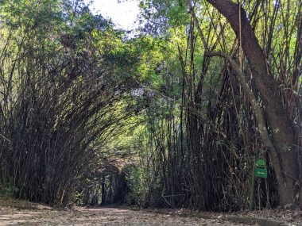
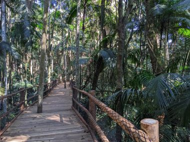
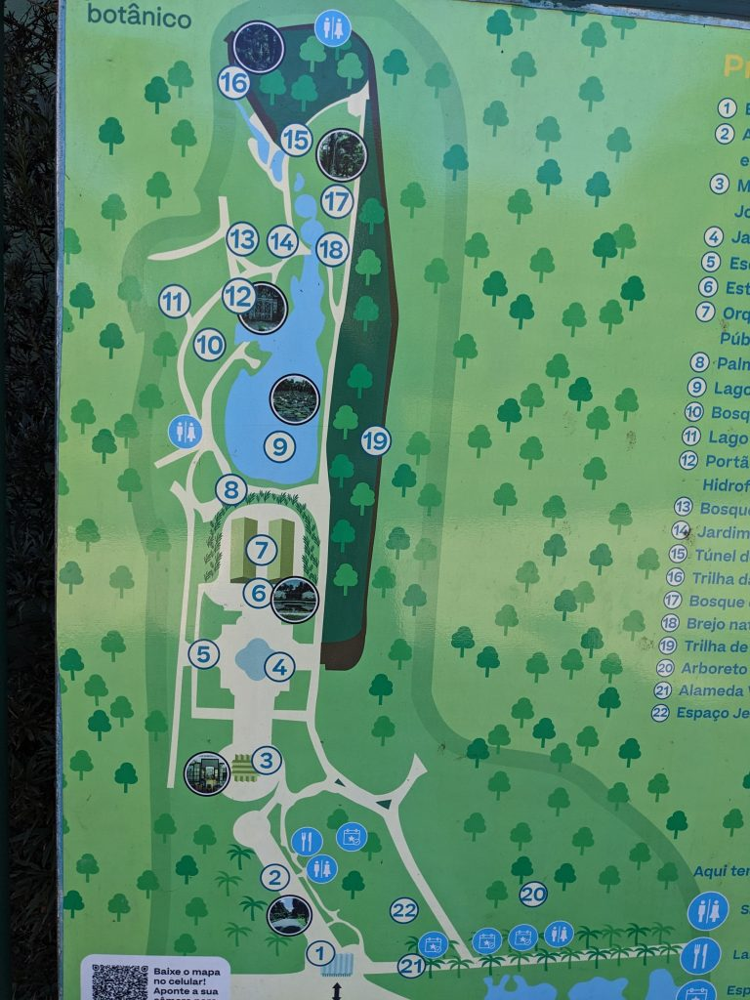
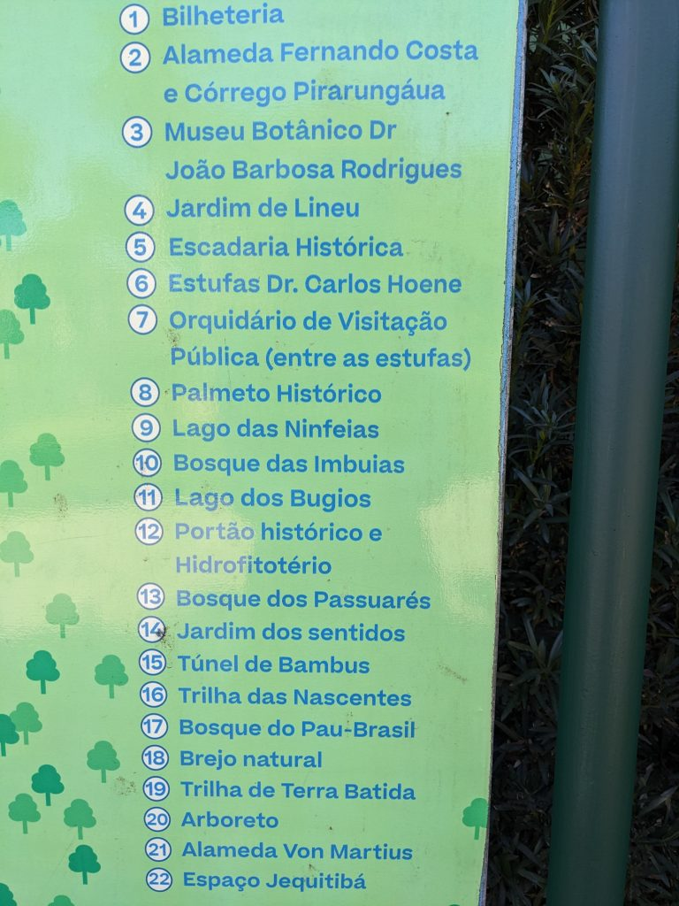
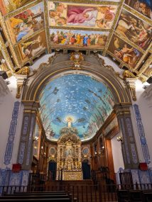
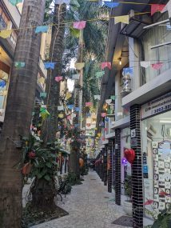
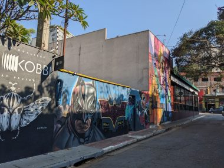
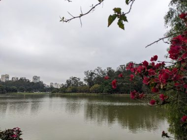
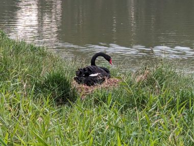

サンパウロ観光～都会でアマゾンのジャングル体験～
前回：ブラジル、おいしいサンパウロ～お値打ちミシュランガイドレストラン～続き
サンパウロで一番楽しかったのは、なんといってもここ,
ーサンパウロ植物園
平日の午前中に行ったせいか、人はまばらで驚くほど静か。ゆっくりくつろげる。カフェやレストランもある。カフェでコーヒーを一杯、ゆっくり味わった。
ここで絶対行くべしは、ネイチャートレイル。
都会にいながらちょっとしたアマゾンのジャングル探検気分を体験できる。
↓竹林のトンネル（地図１５）をくぐり、

右手に進んでしばらくすると、
↓原生林のトレイル（地図１６）に行きつく。

トレイルの入口あたりから、何か動物のけたたましい鳴き声が聞こえ始める。これがこのあたりに生息するといわれるハウラーモンキーの鳴き声なのか。いくら探しても声の主の姿はみえない。私には見えないが、彼らには私が見えているのではないか。緊張感が芽生える。威嚇されているのではないかと思えるほどすさまじい迫力の音の中を、獣の気配を近くに感じながら、うっそうとしげる熱帯雨林をずんずんと進んでいく。私たちのほかは誰もいない。するとあらたに別の鳴き声が聞こえてきた。それも近づいてくる様子。なんだろう、と身構えたその時、お父さんに連れられた小学生の男の子が曲がり角から現れた。なんてことはない。その子が動物のをそれっぽい声を真似していたのだった。それで人間が近くに来たのを察したのか、けたたましい鳴き声も終わった。
もし、開園時間の直後にこのトレイルを歩いていたら、もっと動物がみれたのではないか。サンパウロを訪れる機会がまたあるならば、絶対にまた来たい。
↓ １が公園入口のチケット売り場。


サンパウロで意外と楽しめたのは、街歩きと自転車。
とにかく危険なイメージしかなかったブラジル。着いた初日は通りを歩くのもおそるおそるだったが、慣れてくるにつれ土地勘がついてきて、エリアと時間を選び、充分に気を付けたら楽しかった。
ふらっと入った教会が素晴らしかったり。高級住宅街に位置するこの教会は、日本人街のリベルタード広場にある教会とは対照的に明るく華やか。
↓Paroquia Nossa senhora do Brasil

散髪屋さん、コーヒー屋、アンティークショップなど、一人店主のお店で成り立つアーケードを冷やかすのがおもしろかったり。
↓アウグスタ通りのアーケード

↓べコデバットマン ストリートアートで有名なエリア。週末はかなり混雑するらしかったので、午前中早い時間に行ったら飼い犬を散歩させる近所の住人くらいしか歩いていなかった。おかげで写真もとれた。２０分もあれば十分みてまわれた。昼のレストランの予約まで時間を持て余してしまったのでカフェの屋外の席でコーヒーを飲みながら連れられてくる犬同士の社交の様子を観察していた。

↓イブラプエル公園 広大な敷地は自転車道が整備されているので、貸自転車で気持ちよく走れる、はずだったが、時は日曜の３時ころ。自転車にのるひとが多すぎて自転車道も混みすぎだった。かなりのスピードで走る若い子たちのグループがいて、追いこそうといらだってベルを鳴らされる始末。ここは午前中にきたかった。



 180以上の国と地域で使える【World eSIM】
180以上の国と地域で使える【World eSIM】
 続き：サンパウロ観光～持ってきて良かったもの～
続き：サンパウロ観光～持ってきて良かったもの～